06 · Verification · 01
A test needs an independent expectation
Driving a program and observing activity is not enough. A scoreboard compares the observed result with an expectation fixed independently of the DUT.
The expected path is independent of the DUT implementation and its decoded state.
Explore the reasoning
An oracle is a source of expected results. Reusing the DUT decoder as the oracle can make both implementations agree on the same mistake.
06 · Verification · 02
Start with one observable transaction
The integration witness writes 3C to C000, reads its E000 echo, adds 05 and writes 41 to C001. State, address and value make a precise claim.
Explore the reasoning
A final 41 alone is weak evidence: the wrong read could be hidden by a later overwrite. The bus trace establishes the route as well as the final state.
06 · Verification · 03
Observe three different boundaries
The same run checks retirement records, memory transactions and pixels. Each catches a different class of defect.
Wrong PC, flags, instruction bytes or event kind.
Wrong address, order, write count or stack traffic.
Wrong shade, coordinate, start marker or timing.
Explore the reasoning
Correlate these with epoch and emulated dot where their contracts provide them. A frame proves less about instruction details than a complete retirement comparison does.
06 · Verification · 04
Break the output, keep the oracle
A deliberate returned-data, interrupt-connection or pixel mutation must fail for its intended mismatch. That proves the checker can reject an actual defect.

Real output captured at 396b0b4: the same unchanged Python checker passes the joypad and rejects joypad_fault.sv, a DUT with one broken read line, on exactly the documented mismatch. The showcase page records every input.
Explore the reasoning
Changing expected data together with the fault would erase the experiment. Keep the raw failing exit and first mismatch; an unexpected failure reason is not the intended proof.
06 · Verification · 05
A watchdog must outlive a stuck DUT
Measure progress with an independent system-cycle bound. A watchdog driven by the DUT’s frame_done can stop counting precisely when the DUT hangs.
Bound expected events and completion.
Include setup, build, run, checking and cleanup.
Exercise final pause and completion in a short run first.
Explore the reasoning
The normal total simulation budget is 300 seconds. The three explicitly named longer Mooneye cases are exceptions, not permission to make every test longer.
06 · Verification · 06
Choose evidence to match the claim
Unit behavior, composed execution, fitted hardware and physical endurance answer different questions. Preserve each result’s scope.
Explore the reasoning
The repository defines proportional verification tiers and a complementary milestone matrix. A documentation change needs wiki validation, not a new FPGA simulation; a milestone still needs its named acceptance gates.